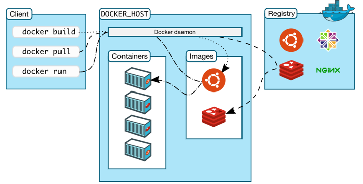

Chapter 10 Genomic data analysis
10.1 IRanges
유전체 데이터의 대부분을 차지하는 정보는 전체 지놈 서열 중 어디서 어디까지가 유전자 또는 coding sequence 이고 그 번역된 정보가 무엇인지 설명하는 정보 입니다. 즉, 일련의 feature에 대한 위치와 특성 정보를 분석하는 것이 효율적인 지놈을 분석하기 위해 필수입니다. bioconductor에서는 이러한 유전체 정보를 효율적으로 분석하고 가시화 하기위한 방법들이 다양하게 개발되어 왔으며 IRanges와 GenomicRanges라는 패키지가 대표적으로 사용될 수 있습니다.
IRanges는 간격을 나타내는 임의의 숫자 세트이며 지놈상에 위치한 특정 feature들의 간격이나 통계적 수치들을 효율적으로 나타내기 위해서 만들어진 패키지 입니다 [@Lawrence2013]. 임의의 feature에 대한 시작, 끝, 넓이를 나타내는 숫자들이 리스트로 이루어져 있습니다.
library(IRanges)
ir <- IRanges(start = c(1,3,5), end = c(3,5,7))
ir
ir <- IRanges(start = 1:10, width = 10:1)
ir
class(ir)
methods(class="IRanges")
?IRangesIRange 객체로부터 몇 가지 정보를 추출할 수 있습니다.
ir <- IRanges(start = c(1,3), end = c(4,5))
ir
start(ir)
end(ir)
width(ir)
disjointBins(ir)
ir <- IRanges(start = c(1,3,6), end = c(4,5,7))
ir
bins <- disjointBins(ir)
bins
ir2 <- disjoin(ir)
Rle(1:10, 1:10)
reduce(ir)이러한 정보를 가시화하는 가장 간단한 방법은 ggbio라는 패키지를 사용하는 것 입니다.
library(ggbio)
autoplot(ir)
autoplot(ir2)
autoplot(ir) +
theme_bw()
autoplot(ir, aes(fill=width)) +
theme_bw()10.2 Genomic ranges
GenomicRanges는 지놈상의 위치정보와 Bioconductor에서 제공하는 다양한 high-throughput 정보들을 같이 표현하기 위해서 만들어진 패키지입니다.
먼저 Rle (Run-length encoding) 개념을 알아봅니다. Rle는 런 렝스 부호화라고 하며 일종의 압축 방법입니다. 예를 들어 GATTGCCCCCCTAG 라는 서열이 있다고 하면 이를 그대로 text 파일에 저장하지 않고 GAT2GC6TAG 라고 표현함으로써 용량을 줄이는 압축의 기능을 합니다. GenomicRange는 이러한 Rle 개념을 사용하기 위해서 Rle라는 기본 함수를 사용합니다.
library(IRanges)
x <- "GATTGCCCCCCTAG"
y <- unlist(strsplit(x, split=""))
yrle <- Rle(y)
yrle
runLength(yrle)
runValue(yrle)
nrun(yrle)
x <- Rle(values = c(1:3), lengths = c(1:3))
class(x)
#methods(class="Rle")
# convert Rle to IRanges
xrange <- IRanges(start(x), end(x))
xrangeGRanges 함수를 이용해서 생성할 수 있으며 browseVignettes("GenomicRanges") 나 methods() 함수를 이용해서 관련된 기능을 찾아서 사용할 수 있습니다.
library(GenomicRanges)
gr <- GRanges(
seqnames = Rle(c("chr1", "chr2", "chr1", "chr3"), c(1, 3, 2, 4)),
ranges = IRanges(101:110, end = 111:120, names = head(letters, 10)),
strand = Rle(strand(c("-", "+", "*", "+", "-")), c(1, 2, 2, 3, 2)),
score = 1:10,
GC = seq(1, 0, length=10))
gr
class(gr)
seqnames(gr)
ranges(gr)
strand(gr)
granges(gr)
mcols(gr) #meta data
seqlengths(gr) <- c(249250621, 243199373, 198022430)
seqlengths(gr)
names(gr)10.2.1 Exercise
- Covid-19 genbank 파일을 읽고 (
genbankr), 2) CDS 서열을 추출한 후 (GenomicRanges), 3) 가시화 하시오 (ggbio)
library(genbankr)
library(ggbio)
library(DECIPHER)
covid19 <- readGenBank("covid19.gb")
covid19cds <- cds(covid19)
covidseq <- covid19@sequence
covidseq <- getSeq(covidseq, covid19cds)
BrowseSeqs(covidseq, colWidth = 200)
autoplot(covid19cds)위 GenomicRanges 데이터를 dplyr 형태로 좀 더 쉽게 다루기 위한 패키지가 plyragnes 입니다.
library(plyranges)
covid19cds
gcr <- rowSums(letterFrequency(covidseq, c("G", "C"), as.prob=T))
covid19cds %>%
select(gene, product) %>%
mutate(gc = gcr) %>%
filter(grepl(pattern = "ORF", gene)) 10.3 ORFinder with Docker
생물학 데이터 분석의 특성상 리눅스에서만 활용 가능한 프로그램이 많으며 또한 리눅스에서 복잡한 라이브러리를 설치하다 보면 라이브러리끼리의 충돌과 관리의 어려움이 있습니다. 이러한 문제를 Docker를 이용해서 해결할 수 있습니다.

본 강의에서는 도커를 이용해서 NCBI의 대표적인 툴인 blast와 ORFfinder 를 활용해보도록 하겠습니다.
ORFfinder -in covid19.fasta -out output10.3.1 Exercise
- 위에서 ORFfinder로 생성된 출력 결과를 읽어들이고 GenomicRanges 형태의 데이터로 만드시오